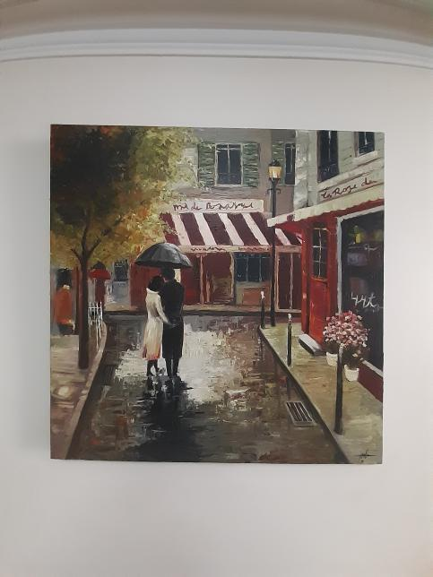
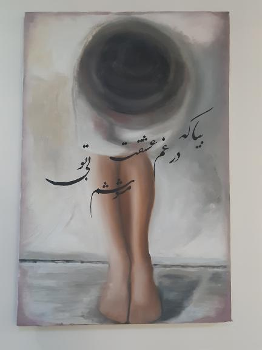
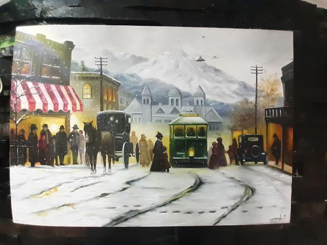

About me:
• Designing the project line and preparation the plan profiles of the sixth gas
• pipeline project of Iran from Dehgolan to Takab , Takab to Shahin dej and
• Shahin dej to Miandoab.
• Designing ground control points by using aerial photographs and LPS
• software.
• Calculate the volume of soil operations and the preparation of transverse
• profiles in the 56‐inch pipeline project.
• Training TAMIRANKHODRO’s staff for Leica total station TS09 in 2012
• Training SKS’s (south kave steel co) for Leica Digital level (sprinter 250M) in2013
• Training NISOC’s(national south oil company) for Leica totalstation TS09 and TS06 in2014
• Training NCC’s (national cartography center) for Leica GNSS Receiver (GPS GS10) in 2012
• Training National Copper Industries’ staff GPS GS16 in 2019
• Training municipality of Kerman’s staff for GPS GS16 in 2018
• Training Gas Company of Hormozgan’s staff for GPS GS16 in 2017
• Training Gas Company of Fars’s staff for GPS GS14 in 2015
• Training Azad University (Arak branch) staffs for total station TS06 and levelers in 2015
• Designing an experimental version of monitoring Iran's dam reserves using GIS for
• Iran Water and Power Resources Development Company.
• Locating household waste landfill by using multi‐criteria decision-making methods (AHP)
• and GIS for Tehran municipality.
• Landslide hazard zoning by using the AHP and GIs for Isfahan Crisis Management
• Organization.